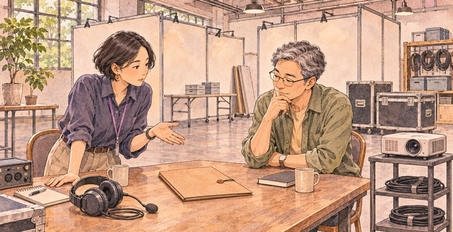

ECO-17 · 香港 · 10–15分鐘 · 協調失靈 · 互補投資 · 附條件承諾
你投產，我們就投產。

合作可以促成一項活動
2026年9月3日，香港商務及經濟發展局公布即將舉行的 Festival of Connoisseurs，並說明如何與場地營運商亞洲國際博覽館協力促成活動。這項公布只為活動合作提供有明確日期的背景，既不說明合作各方的得益，也不能證明存在承諾機制。下文的兩家供應商及其安排均屬原創虛構。
課堂決定
你經營 Sound Step，一家虛構的無障礙語音導賞服務供應商。一名籌辦小型展覽的客戶，既需要你度身製作的語音模組，也需要 Light Step 提供的互補投影模組。兩家供應商各自獨立經營，在這兩個模組的供應上並不互相競爭。各方可選擇承諾投入6,000港元製作自己的模組，也可選擇不投產。雙方尚未作出承諾，並須同時作決定。口頭表示有興趣，不等於已有資金支持的訂單。
只有兩個模組均完成製作，客戶才會向每家供應商支付10,000港元。課堂模型假設，只要雙方都投產，便確定能收到上述款項；成品符合規格，沒有額外成本，模組也無其他用途。不投產的增量得益為零。無障礙、安全、牌照、員工薪酬及對現有客戶的所有責任，均由已有資金支持的安排保障。雙方均有能力承擔自己的投入，但若單方面投產，便須花費6,000港元，且毫無收入。這些是模型設定的增量現金得益，並非對真實展覽的預測。
在這個項目以外，你仍獨立作出商業決定。各方不討論向無關客戶收取的價格、競爭對手的資料、排除競爭的安排或市場瓜分。課堂模型不能證明任何真實合作符合競爭法。
| Sound／Light | Light 投產 | Light 不投產 |
|---|
| Sound 投產 | 4,000；4,000 | −6,000；0 |
| Sound 不投產 | 0；−6,000 | 0；0 |
增量淨現金，以港元計，Sound 列在前。每方的4,000 = 10,000收入 − 6,000製作成本。並無提供概率。
你的決定你現在會承諾投產，還是選擇不投產？請說明你的決定如何取決於你對 Light Step 行動的判斷。
第二輪 · 多了一項資料
在任何一方尚未產生製作成本之前，項目管理人提出一套設有核實程序的附條件訂單安排。每家參與的供應商須將6,000港元製作資金存入獨立保管安排，另繳500港元不可退還的行政費。若雙方在星期五中午或之前均已存款，管理人便會同時發出兩張已有資金支持的製作訂單。若任何一方未有存款，便不會發出任何製作訂單，所有已繳的6,000港元按金均全數退還，但參與者仍會損失已繳的500港元行政費。兩張訂單一經同時發出，任何一方均不能撤回已接受的訂單。
Light Step 現已存入6,000港元、繳付行政費，並簽署附條件指示。管理人已核實其資金及生產準備情況。按金繼續由管理人保管，指示亦維持有效，直至星期五中午。Sound Step 資金充足，可以在限期前接受訂單。按這項程序的設定，另一方的相應按金一經核實，便會觸發兩張訂單同時發出；這並非只是保證有人日後有意付款。
資金保管、退款及訂單發出安排均已由獨立一方核查；本練習假設這些安排會按上述方式運作。這並非對真實第三方託管安排的建議，也不是法律範本。程序消除的是一張已有資金支持的製作訂單在另一張未落實時單獨執行的特定風險。它並不能普遍消除客戶需求、品質、交易對手或管理人方面的風險；這些較廣泛的風險是由課堂假設固定下來，並非加上「附條件」三字就能解決。
你的決定你現在會接受附條件訂單嗎？請比較接受與拒絕的淨現金結果，並準確指出這項安排改變了哪一種風險。
講評：這是協調問題，不是搭便車
若 Light 投產，Sound 寧願投產：可得4,000港元，而不是零。若 Light 不投產，Sound 寧願不投產：得益為零，而不是損失6,000港元。Light 面對的比較也一樣。在這個簡單的同時決策模型裏，雙方都投產和雙方都不投產，都是穩定結果：任何一方單獨改變決定，都不會得益。即使雙方都看得出哪個結果對彼此更好，那個結果也不一定會出現。
經核實承諾的成本
Light 已有資金支持的附條件指示現已核實，仍然有效。Sound 若及時接受，得益為10,000港元 − 6,000港元 − 500港元 = 3,500港元；若拒絕，得益為零。若訂單發出，兩家供應商各得3,500港元。假如只有一方加入機制，該參與者只會損失500港元，而不是6,000港元，因為製作按金會退還。這項安排確實有成本；若仍未有合作方作出承諾，安排也不能保證有人參與。
留意結論的適用範圍
若沒有這項機制，按風險中性計算，只有當 Sound 認為 Light 投產的概率高於60%，才會傾向投產：4,000p − 6,000(1 − p) > 0。題目沒有給出這個概率，因此這並非預測，也不是初次決定必須給出的答案。第二輪在對方承諾已獲核實的情況下，若收費為4,000港元，便會抵銷 Sound 的全部增量得益；題設的500港元則不會。協調必須限於這個需要雙方互補投資的項目；如要在現實中採用這類安排，應徵詢獨立意見。
教師說明
請學生兩人一組，在公布新資料前各自作出選擇，並解釋各自的判斷，不要把審慎視為不理性。可與公共物品的搭便車情況對照：在本個案中，不投產的得益為零，不能享有項目效益。第二次投票前，公布 Light 已有資金支持的指示已獲核實。要求學生區分6,000港元可退還按金和500港元不可退還費用，也要區分已有資金支持的訂單同時發出與握手承諾。不要把得益固定的模型推論為真實項目必定有利可圖，或競爭對手之間的協調必定合法。
第二輪
在任何一方尚未產生製作成本之前，項目管理人提出一套設有核實程序的附條件訂單安排。每家參與的供應商須將6,000港元製作資金存入獨立保管安排，另繳500港元不可退還的行政費。若雙方在星期五中午或之前均已存款，管理人便會同時發出兩張已有資金支持的製作訂單。若任何一方未有存款，便不會發出任何製作訂單，所有已繳的6,000港元按金均全數退還，但參與者仍會損失已繳的500港元行政費。兩張訂單一經同時發出，任何一方均不能撤回已接受的訂單。
Light Step 現已存入6,000港元、繳付行政費，並簽署附條件指示。管理人已核實其資金及生產準備情況。按金繼續由管理人保管，指示亦維持有效，直至星期五中午。Sound Step 資金充足，可以在限期前接受訂單。按這項程序的設定，另一方的相應按金一經核實，便會觸發兩張訂單同時發出；這並非只是保證有人日後有意付款。
資金保管、退款及訂單發出安排均已由獨立一方核查；本練習假設這些安排會按上述方式運作。這並非對真實第三方託管安排的建議，也不是法律範本。程序消除的是一張已有資金支持的製作訂單在另一張未落實時單獨執行的特定風險。它並不能普遍消除客戶需求、品質、交易對手或管理人方面的風險；這些較廣泛的風險是由課堂假設固定下來，並非加上「附條件」三字就能解決。
你的決定你現在會接受附條件訂單嗎？請比較接受與拒絕的淨現金結果，並準確指出這項安排改變了哪一種風險。